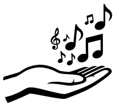

¡Gracias por tu interés en liberar tu canto! Nosotros estamos convencidos de que esta es la mejor forma de hacer llegar un canto a más hermanos, y de glorificar a Dios con nuestros talentos. Aunque todavía no hayas decidido si quieres liberar tu canto, puedes utilizar esta herramienta para explorar tus opciones.
No somos abogados y esta página es solo para fines informativos.
¿Estás dispuesto a permitir a cualquier persona copiar, distribuir, y proyectar tu canto, sin necesidad de pedirte permiso?
¡Sí! Quiero liberar mi canto. Muéstrame mis opciones. No, prefiero mantener mi canto con “todos los derechos reservados”.Tu primera opción es dedicar tu canto al dominio público. Mientras que el derecho de autor tradicional reserva todos los derechos, la dedicación al dominio público libera todos los derechos, esencialmente convirtiendo tu canto en un regalo para la hermandad, sin restricciones.
Una dedicación al dominio público no implica renunciar tu autoría. Aunque tu canto esté en el dominio público, nadie tiene derecho de pretender ser el autor y beneficiarse de tus derechos de autor. Si esta posibilidad te preocupa, puedes proteger tu autoría registrando tu derecho de autor con el gobierno, lo cual no te quita el derecho de dedicarlo al dominio público ni de liberarlo bajo una licencia libre.
¿Quieres dedicar tu canto al dominio público, liberando todos los derechos?
Sí, quiero que sea un regalo para la hermandad, sin restricciones. Quiero liberar mi canto, pero prefiero ver las opciones que ponen restricciones a su uso.Está bien, estás en todo tu derecho. Sin embargo, las licencias libres requieren como mínimo permitir que otros copien y compartan tu obra, así que ninguna licencia libre sería apropiada en tu caso.